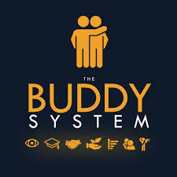

starworld
Starworld is an apparel brand owned by an international group which owns the
Cotton Club that produces apparel and is a marketer and a
vertically-integrated manufacturer. The company and brand's manufacturing
centre is in Alexandria, Egypt, and the brand has offices in Warrington
(England), Alphen aan den Rijn (Holland) and Nicosia (Cyprus).
History
The brand was first developed in the 1990s and the Cotton Club has sole
rights to produce and sell Starworld to the European apparel decoration
market. The Cotton Club is a fully certified environmental and ethical
factory that is certified WRAP, SMETA, OEKO-TEX 100 Standard and Reach. The
factory is also GOTS certified meaning it can produce organic clothing.
This has resulted in Starworld clothing being produced under market
leading certifications.
| brand name |
size |
cost |
model |
| denim |
m |
999 |
ton |
| denim |
m |
999 |
ton |
| denim |
m |
999 |
ton |
